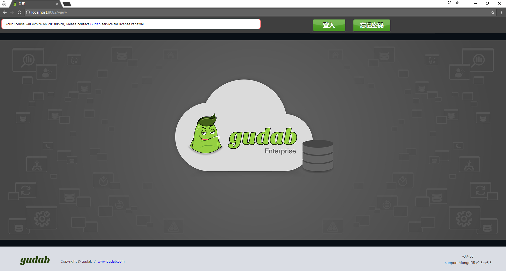
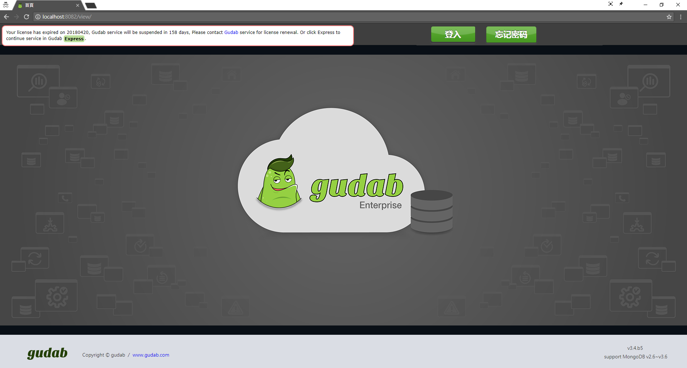
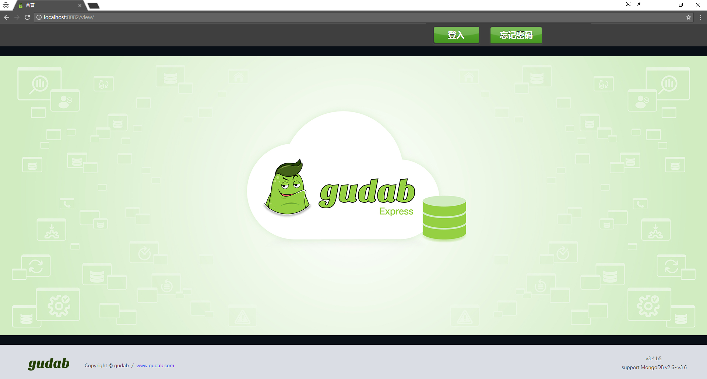
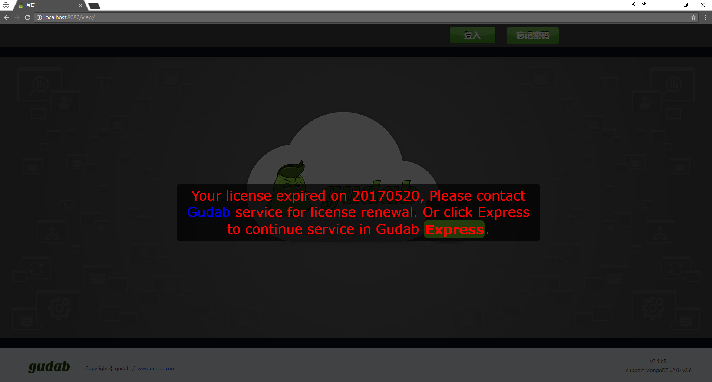

使用說明
安装
被监控对象(MongoDB)⽀持说明

(一) 支援MongoDB版本：v2.6 ~ 3.6
(二)支援OS版本
a.Rehat6、Redhat7
b.CentOS6、CentOS7
c.Ubuntu14、Ubuntu16
d.Windows Server 2008 R2 64-bit and later
(三) 建立 Linux Service Account：参考 gudab_v3.6.1.0_系统整合书。
(四) 建立 MongoDB Service Account：参考 gudab_v3.6.1.0_系统整合书。
(五) 编辑 hosts file：参考 gudab_v3.6.1.0_系统整合书。
gudab系统需求
(一) Java 1.8
(二) OS版本
- Redhat6、Redhat7
- CentOS6、CentOS7
- Ubuntu14、Ubuntu16
- Windows Server 2008 R2 64-bit and later
(三) 硬件资源
- CPU：最低需求 4core、建议8core以上。
- RAM：最低需求 16GB、建议32GB以上。
- Disk： 所需准备的空间 = 安装 + 指标 + 备份
- 安装：300MB。
- 指标：最低需求为 10GB，建议 20GB。( 10 host/month)。
- 备份：最低需求为 data size的 1.5倍、建议 2.5倍以上。
註：至少一台consoleDB(MongoDB)，只监控不备份。
gudab Enterprise 下载安装步骤
(一) 到官网免费下载 gudab Enterprise 软件 http://www.gudab.com/
(二) 解压缩于任意目录，但路径名称不可有特殊字符符号，例. []。
(三) 编辑 hosts file：参考 gudab_v3.6.1.0_系统整合书。
(四) 以SSH公钥认证、编辑 SSH properties file：参考 gudab_v3.6.1.0_系统整合书。
(五) 编辑 gudab properties file：参考gudab_v3.6.1.0_系统整合书。
(六) 防火墙端口设定(可选-全备用)：参考gudab_v3.6.1.0_系统整合书。
(七) 准备档案到指定路径(可选-全备用)：参考gudab_v3.6.1.0_系统整合书。
(八) 变更 consoleDB 的密码：执行 changePwd.sh (linux) 或 changePwd.bat(windows)。
(九) 启动 gudab：执行 start.sh (linux) 或 start.bat (windows)
PS. windows 用户要"以管理员身分执行"。
首页与登入
首页与登入
使用者可透过浏览器连结至以下网址「http://localhost:8080/view」，即可进入gudab系统的登入页面，例. http://192.168.1.64:8080/view 。
点选「登入」，输入帐号与密码后，按下「登入」，若帐号与密码经过认证成功后，即可登入gudab系统，系统会自动显示「系统监控」模组的首页。
gudab系统安装完成后，系统中所预设的管理者帐号为「root」，管理者密码为「root」。建议使用者登入gudab系统后，可利用「个人资料」功能来变更管理者密码，以确保系统安全性。<详见 6.1 个人资料>
假设今日为 20180118
- 到期日为 20180130
- 过期前1个月内显示提示讯息
- 初次登入，左上会提醒试用 Enterprise 30 天的到期日。
 3-1 首页登入(过期前1个月) - 到期日为 20171225
- 过期后1个月内显示告警讯息，并倒数可用天数。
- 请订阅 Enterprise，或降版至 Express。
- 点击画面上的按钮，永久降版至 Express。
 3-2 首页登入(过期后1个月)  3-3 首页登入(Express) - 到期日为 20171212
- 过期超过 1 个月锁住画面
- 请订阅 Enterprise，或降版至 Express。
 3-4 首页登入(Expired)

监控管理
系统监控首页
「系统监控」模块的首页会显示目前被监控中的 MongoDB 服务器列表以及状态信息。
| 字段 | 说明 |
|---|---|
| 架构类型 | 该 MongoDB 服务器的服务器类型，包含以下类型： SA (StandAlone) RS (Replica Set) SC (Sharded Cluster) |
| 灯号 | 此灯号代表是目前该 MongoDB服务器的状态，绿灯代表正常运作中，红灯则代表该服务器目前已停止 运作或状态异常。 |
| 别名 | 用户自定义义名称。预设为"host:port" |
| 服务器名称 | 该 MongoDB 服务器的主机名。固定为 "host:port"，点击连结可看其指标。 |
| RS成员 | RS成员的角色，包含以下类型： (P) PRIMARY (S) SECONDARY (A) ARBITER |
| 版本 | 该MongoDB服务器的MongoDB版本。 例. 3.4.10 |
| 启动时间 | 该MongoDB服务器启动后的运行时间。 例. 4D 23H 0m |
| 响应时间 | 该MongoDB服务器最后被监控联机的时间。例. 2018-01-19 08:26:40 |
| (编辑)设定 Exception Time。 | |
| (删除)按下此按钮即可删除该该 MongoDB 服务器的监控设定。 |
| 灯号 | 说明 |
|---|---|
| 所有成员正常监控中 | |
| 部分成员处于例外时间，其余成员正常监控中 | |
| 所有成员处于例外时间 | |
| 所有成员脱离监控 | |
| 部分成员脱离监控 |
设定被监控对象(MongoDB信息)
首次登入，预设只会监控gudab内建的consoleDB。
若需要监控某台MongoDB服务器，可透过「新增服务器」将该服务器加入监控列表中。
请输入以下字段信息：
(一) 服务器的主机名 : MongoDB服务器的主机名(此字段为必填)。
(二) Port : MongoDB服务器 所设定的Port(此字段为必填)。
(三) 数据库用户名称 : 若该MongoDB服务器有设定账号控管，则须输⼊此使用者名称。
(四) 数据库用户密码 : 若该MongoDB服务器有设定账号控管，则须输⼊此密码。
＊Auto Discovery
若您加⼊的 MongoDB 为丛集成员(Replica Set, Sharded Cluster)，本监控系统会自动带出此丛集的所有成员进⾏监控。
自动重启机制
(规划中)当监控的 MongoDB ⽆法联机或 process 不存在时，可额外设定是否对MongoDB 进⾏重启动作。例如当 MongoDB Process 未预期消失时，gudab 可自动 SSH 进到该 Server，执⾏准备好的 linux script，进⾏ MongoDB 启动作业。
监控指标
若需要检视 MongoDB 服务器的监控指标，可直接点选服务器列表中该服务器的 HOST 字段，即可检视各种监控指标。
如下图所示，左⽅选单为监控指标群组，包含「我的最爱」、「Host Status」、「Utilization」、「Events」、「Saturation」、「Throuhgput」、与「Performance」等群组，直接点选该群组，下⽅即会显示群组下的指针项目，点选该指针，右⽅即会显示该指针的图形。
以 Connections 指标为例，如上图所示，该 MongoDB 服务器的连接数量会以折线分区图的⽅式来呈现，X 轴(显示区间)是该信息被记录的时间，Y 轴则是该信息的数值。用户可点选「时间刻度」与「显示区间」来变更指针数据的显示⽅式与范围。
时间刻度是指要以何种资料取样时间 (频率)来显示，如下图 4 所示，若时间刻度选择 5sec，则数据取样时间会以每 5sec 的数据来显示，下图上⽅图形的数据取样时间为 13:27:17，下图 4 (下⼀笔数据)的数据取样时间则为 13:27:22。显示区间则是 X 轴所要显示的数据取样范围，如下图所示，若显示区间选择10min，则 X 轴会显示最近 10min 的资料。
每种时间刻度皆会提供默认的数组显示区间，以⽅便使用者操作。目前共有 4 种时间刻度可选，各自对应 3 种不同的显示区间。
- 5sec(10min,30min,1hr)
- 1min(100min,3hr,6hr)
- 5min(3hr,6hr,12hr)
- 1hr(1day,1week,2week)
点选爱⼼旁的⽅框，会显示 data point。点选 Auto Refresh，会关闭图表刷新(红底)。点选 SI 时，会列出 SI 的比例关系。注：data point 介于 50 到 300 个才可点选⽅框，小于 50 个时，会强制显示、⼤于 300 个时会强制关闭。
| Host Status | ||
|---|---|---|
| CPU | cpuUS | CPU总体使用率 |
| cpuID | CPU空闲比率 | |
| cpuWA | CPU等待IO比率 | |
| cpuPidUS | Mongo的CPU使用率 | |
| Memory | memTotal | Server总共有多少Memory |
| memFree | 剩余的Memory | |
| memUsed | 使用中的Memory | |
| mongoVirt | Mongo使用的虚拟内存总量(Swap+Res) | |
| mongoRes | Mongo使用非被置换的物理内存⼤小 | |
| mongoShr | Mongo使用共享内存⼤小 | |
| mongoUsed | Mongo使用的虚拟内存百分比 | |
| Swap | swapTotal | Server总共有多少Swap Memory |
| swapFree | 剩余的Swap Memory | |
| swapUsed | 使用中的Swap Memory | |
| Storage | size | Mongo的dbPath共有多少空间 |
| used | Mongo已使用的storage空间 | |
| alive | Mongo的dbPath剩下的空间 | |
| percent | Mongo使用storage的百分比 | |
| Utilization | ||
| Connections | connections | 用户联机的数量 |
| Cursors | open | 当前 cursors 的数量 |
| timedOut | 启动至今，过期 cursors 的总数量 | |
| DbMemory | mapped | 映像的内存量。 |
| mappedWithJournal | 映像的内存量 (包含 journal) | |
| resident | 当前使用的内存量 | |
| virtual | 使用的虚拟内存量 | |
| Journaled Size (V2.6) | size | 上⼀次 journal group 提交期间，写⼊ journal 的资料量。 |
| WiredTiger Cache (V3.4) | current | 正在使用的数据，佔 WT cache 的大小 |
| maximum | WT cache 上限的大小 | |
| dirty | 异动过的数据(脏数据)，占 WT cache 的⼤小。 | |
| WiredTiger Transactions (V3.4) | readAvailable | WT 读交易 tickets，可用的数量 |
| readOut | WT 读交易 tickets，当前使用的数量 | |
| writeAvailable | WT 写交易 tickets，可用的数量 | |
| writeOut | WT 写交易 tickets，当前使用的数量 | |
| Events | ||
| Asserts | msg | 启动至今，message asserts 的数量。来自各种 DB 内部错误，例如参数不在指定范围内 |
| regular | 启动至今，regular asserts 的数量。违反不变条件的操作，例如读取 BSON 档案失败 | |
| user | 启动⾄今，user asserts 的数量。这些是由使用者所产⽣的错误，例如磁盘空间不⾜、重复键值、⽆权访问。 | |
| warn | 启动⾄今，warning 的数量。不是严重错误，但仍需检查，多数与环境配置有关，例如ulimit, readahead 太小，使用root 启动 DB。 | |
| Page Faults | pageFaults | 发生 page faults 的总数量 |
| Saturation | ||
| Current Queue | readers | 因为 read lock，当前操作队列 (queued) 的数量。 |
| total | 因为 lock，当前操作队列 (queued) 的总数量。 | |
| writers | 因为 write lock，当前操作队列 (queued) 的数量。 | |
| Journaled Lock (V2.6) | lock | 提交时，写锁被取走的次数。 |
| Throughput | ||
| Active Clients | readers | 当前的客户端联机，发起读操作的数量。 |
| writers | 当前的客户端联机，发起写操作的数量。 | |
| Network | in | 接收的网路传输量 |
| out | 发送的网路传输量 | |
| Opcounters | command | 启动至今，执行指令的总数量 |
| delete | 启动至今，删除操作的总数量 | |
| getmore | 启动至今，getmore 操作的总数量 | |
| insert | 启动至今，新增操作的总数量 | |
| query | 启动至今，查询操作的总数量 | |
| update | 启动至今，修改操作的总数量 | |
| Performance | ||
| Replication Oplog | timeDiff | 剩馀同步时间 |
| replicationLag | Secondary 同步 Primary 的延迟时间 | |
| replicationHeadroom | 记录 oplog 第一笔与最后一笔的时间间隔 (Oplog Window) | |
| Background Flush (V2.6) | lastFlush | 上一次落盘操作，所花费的时间 |
| Journaled Time (V2.6) | time | Journaling 后，写入 data files 的时间 |
| Index (V2.6) | accesses | 操作访问索引的次数 (hits+misses) |
| hits | 操作访问的索引在内存的次数 | |
| misses | 操作访问的索引不在内存的次数 | |
我的最爱
使使用者可将不同群组中的监控指标加⼊「我的最爱」群组中，如下图所示，请点选「加入我的最爱」的爱心图案，待爱心图案变成全红，即代表设定完成。
另外提供「我的最爱」设定页面，一次总览所有的分类细项，如下图所示，请勾选或取消监控的项目。
使用者可点选「我的最爱」群组，如下图所示，系统即会显示方才所加入的监控指标。
历史活动资讯
历史活动资讯
「系统状态列表」会显示依照时间来显示目前被监控中的MongoDB 服务器所发生的历史活动讯息与状态。
| 字段 | 说明 |
|---|---|
| DATE | 发生该活动的日期 |
| HOST | 发生该活动的MongoDB服务器的主机名称 |
| ACTIVITY | 发生的活动讯息 |
使用者管理
个人资料
登入系统后，若需要检视或更新本身的个人资料，可按「个人资料」，系统会显示目前的个人资料，包含账号、Email、密码与密码确认。
若需要更新个人资料，可直接输入更新数据，并按「送出」。若不需更新数据，请按下右上⽅ X 按钮来关闭本页面。
首次使用系統中所預設的管理者帳號 root 登⼊，请记得马上更新用户密码。
新增使用者
若需要新增使用者，可按「新增用户」，系统会显示新增用户页面，请输⼊该用户的数据，包含账号、Email、密码与密码确认，并按「送出」。若不需新增使用者，请按下右上⽅ X 按钮来关闭本页面。
系统告警 (企业版)
系统告警首页
「告警」模组的首页会显示目前所设定的告警设定清单
| 字段 | 说明 |
|---|---|
| 告警名称 | 该组告警设定的识别名称，可由使用者自行输入 |
| 告警频率(分) | 侦测是否符合告警条件的频率，单位为分钟 |
| 操作钮 | 针对该组告警设定可执行的操作功能，包含 : 编辑 : 编辑该组告警设定 删除 : 删除该组告警设定 |
建立告警设定
(一) 若需要建立告警设定，可透过「新增告警设定」来建立告警设定。
(二)设定以下信息 ，并按「送出」
- 输入告警名称：该组设定的识别名称，可由使用者自行输入。
- 选择伺服器：需要纳入告警侦测范围的伺服器，可複选。
- 告警情境设定：设定告警的条件，请勾选所需的条件项目，并输入条件值。
- 发送给：设定告警的侦测频率，以及侦测到符合告警条件时，所需要执行的动作。请由文字框中输入告警 侦测频率的间隔频率，单位为分钟。目前提供的告警动作包含E-mail。
(三) 系统会显示告警设定建立成功，请按「关闭」离开此页面。
例外时间
MongoDB的告警会需要有例外的时候。例如，当进行全备份时，MongoDB是在预期内被关闭的，此时是不需要发告警的。
因此，例外时间就是让告警系统，得知该MongoDB是在预期内shutdown，而不需要发告警。
(一) 例外时间可以对整个集群或特定成员设定
(二) 针对 RS 特定成员 trs02c:23001 设定例外时间
(三) 点选编辑钮可以设定例外时间。若尚未设定例外时间则为空
(四) 例外时间会显示在伺服器列表上，可以设定多组。并可视其用途给予别名(New Alias)
(五) 新增例外时间后，产生新的别名
备份还原 (企业版)
备份还原首页
gudab 是针对丛集架构(replica set / sharded cluster) 做备份，不支持对单一节点(standalone)备份。
若真有对单一节点备份的需求，请将 standalone 转成 primary；换句话说，就是没有 secondary 的 replica set
「备份还原」模组的首页会显示目前所设定的备份设定清单
| 字段 | 说明 |
|---|---|
| ID | 该组告警设定的识别名称，可由使用者自行输入 |
| CLUSTER | 该组备份设定所包含MongoDB服务器 |
| 服务器类型 | 该MongoDB服务器的服务器类型，包含以下类型 : MONGOS Replica Set Config Server |
| 状态 | 该组备份设定目前是否启动，绿灯代表启动，红灯代表未启动 |
| 最后资料备份时间 | 该组备份设定中，各资料库的最后资料备份时间 |
| 操作 | 针对该组备份设定可执行的操作功能，包含 : 开始备份 : 启动资料备份作业 回復 : 启动资料还原作业 编辑 : 编辑该组备份设定 删除 : 删除该组备份设定 |
建立备份设定
(一) 若需要备份MongoDB中的数据，可透过「新增备份设定」来建立备份设定。
(二) 请选择所需要备份的数据库与Collection，并按「下一步」
(三) 完成备份设定，请按下「关闭」回到备份设定清单页面。
启动备份作业
(一) 请由备份设定清单页面中，针对需要启动备份作业的项目，按下「备份」
(二) 系统会显示确认讯息，若需要启动备份作业，请按下「确定」，或按下「取消」离开本页面。
(三) 若按下「确定」，则会启动备份作业。状态区位会变成绿灯，代表该备份作业已经正常启动执行，可按下「停止备份」来停止该作业。
执行还原作业
(一) 若需要使用某备份设定项目的数据来进行还原作业，则需要先停止该备份项目的备份作业，请针对该备份设定项目按下「停止备份」，并按下「确定」。这时候会关闭所有 delayed 成员。
(二) 从指定目录手动複製底下所有 data files 方式，取代原本被监控对象所有成员的data files。
指定目录：./gudab/fullbackup_hidden_mongo/
例../gudab/fullbackup_hidden_mongo/1514958344362_Sa1/data/*
scId 为 sharded cluster 加入监控的 timestamp。
rsId 为 Replica SetName。
接着，请重新启动 MongoDB，根据 gudab.properties 预设回朔到3600秒之前，若是这部分没有把握完成，可由gudab团队人员进场协助。
(三) 该备份设定的状态栏位会显示为红灯，请按下「回復」，开始执行还原作业。
(四) 请完成各项还原作业的设定
(五)还原作业的设定完成后，请按下「Confirm」来执行还原作业。
联络方式
原厂(新加坡) - gudab
地址：Level 40, Ocean Financial Centre 10 Collyer Quay Singapore 049315
电话：+65-6808-6029
信箱：service@gudab.com
网址：https://www.gudab.com
代理商(台湾) - thinkpower
地址：3F., No.437, Ruiguang Rd. Neihu Dist., Taipei City 114, Taiwan (R.O.C.)
电话：+886-2-27942668 # 604
信箱：service@thinkpower.com.tw
网址：https://www.thinkpower.info/